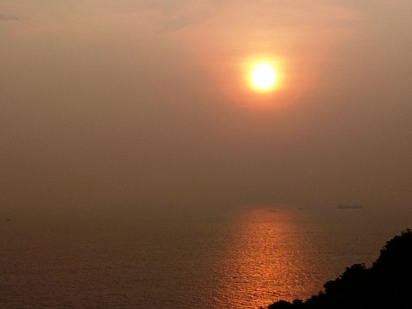
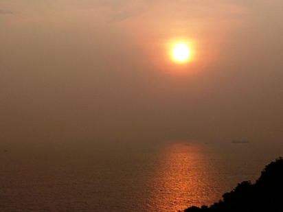
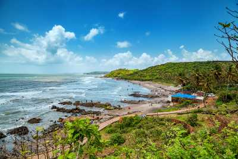
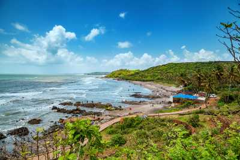

HISTORY
Aguada Fort, located in Goa, India, boasts a rich history that intertwines with the region's colonial past and maritime heritage. Constructed in the early 17th century by the Portuguese, Aguada Fort served as a crucial defensive structure to guard against enemy attacks and protect the Portuguese interests in the region.
The name "Aguada" itself derives from the Portuguese word "água," meaning water. The fort was strategically positioned atop a hill overlooking the Arabian Sea, providing a commanding view of the surrounding area and serving as a vantage point to monitor maritime activities along the coast.
One of the primary purposes of Aguada Fort was to safeguard the nearby Aguada Water Reservoir, which was constructed to provide a reliable freshwater source for passing ships. The reservoir, now known as the Aguada Fort and Jail, was a vital stopover for Portuguese ships traveling to and from their colonies in Africa, India, and beyond.


 

 
